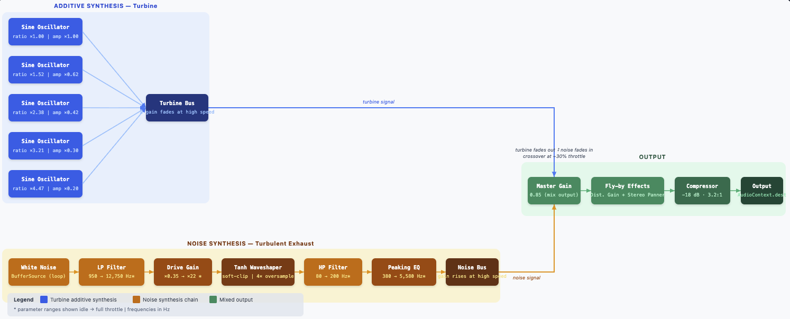

Jet Engine
I aimmed to create a jet engine sound that is realistic and immersive as well as added
(or tried to add) a fly-by effect to the jet engine.
From my Farnell reading, the jet combines two models: a five-partial additive turbine layer and a
turbulent exhaust layer. At low throttle the inharmonic sine partials are
more audible, while high throttle increases broadband noise level, filter
bandwidth, and distortion to produce a loud roaring sound.
The first part was the turbine sound. I created arbritary (but increasing) ratios and (decreasing) amplitudes for the turbine layers so they would never harmonize to one pitch/tone. The speed
was determined by the frequency and scaling by the ratios. I chose to square speed in my equation since the engine
accelerates faster at top throttle in real turbines. The turbine volume will also fade quickly as speed increases since the exhaust is far more loud.
The second part of the jet engine was the turbulent exhaust. I created a white noise buffer and used it to create a turbulent sound since
this noise is much more flat than brown noise. With low and high pass filters (subtractice sythesis), EQ control, and a tanh waveshaper,
I was able to create a realistic exhaust sound. The LPF allows idle to come down to a low noise while at top throtlle we get a lot more of the audio spectrum.
The gain was just to control the signal before the waveshaper which is meant to more smoothly compress at harsh sounds since at full throttle the signal forces the tanh curve into full saturation twice per cycle.
I based this off the book's idea of "a forced flame model" to create that roaring sound at high throttle and hiss at low! As we increase throttle speed, the sounds become more harsh and violent. The HPF just
helps us remove rumble and other things that may occur due to saturation and I actually made this way too high at the start which was cutting the waveshaper off a lot. I added EQ because I didn't love the sound
that was created and looked up other ways that might help shape the jet engine sound; EQ helps boost a band without cutting other sounds with increasing Q and gain. It did make it sound quite powerful.
With both sounds created I combined them with a single gain node where their gains were inversely related to speed, so one fades in as the other fades out. So at idle we hear the more low-key hissing from the turbine
then at full throttle the noise is dominated by the exhaust! I also added a compressor to control the sound and huge range from these two sounds combining/fading into each other.
The experience was fun since I thought the noise would be cool to create. I did not find
the Farnell example still online so I had no comparison. However, I thought changing throttle
speed and fly-by distance was a good way to test the range of the sound! I used additive synthesis
to combine the 5 sine waves and subtractive/waveshaping sythesis for the exhaust. The former allowed for the creation of a realistic turbine sound that shifts
with the throttle speed and is great at low throttle. The latter let me play with the white noise using filters, waveshaper, EQ, and gain so I
was able to create a solid exhaust sound but I think that at high throttle the sound is too similar to
white noise.
